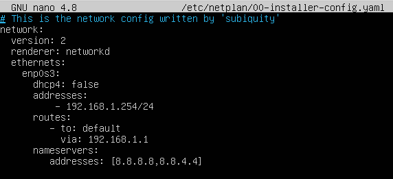
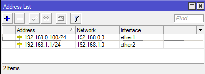

Laboratorio 1. MikroTik - DMZ con dos routers
1. Introducción
Cuando se quiere aumentar el nivel de seguridad de la DMZ, aunque sea más complejo, es aconsejable implementarla con dos firewall:
- Firewall frontent: separa la red DMZ de la red externa, normalmente, Internet.
- Firewall backend: gestiona el tráfico entre la red DMZ y la red interna.
Una de las recomendaciones para aumentar la seguridad es usar dos routers diferentes, ejemplo Mikrotik y PfSense. De esta forma si un atacante es capaz de explotar una vulnerabilidad de uno de ellos, es muy poco probable que encuentre la misma en el otro dispositivo. No obstante, en este capítulo se van a utilizar dos routers MikroTik para no aumentar la dificultad.
2. MikroTik - DMZ con dos routers
2.1 Escenario
Los equipos que intervienen son los siguientes:
- Mikrotik FrontEnd conectado a la DMZ por la parte de la
- Mikrotik BackEnd que es el router frontera entre la DMZ y la red interna/corporativa.
- En la 1ª DMZ se tienen conectados 2 servidores (web y ftp) con ip's estáticas en la red 192.168.1.0.
- En la 2ª DMZ se tienen conectados 2 equipos (administrador del sistema y usuario de escritorio) con ip's estáticas en la red 192.168.2.0.
Figura 1. Esquema de red.
Como se puede observar en la figura 1, los routers tienen la siguiente configuración:
- El router FrontEnd separa la primera DMZ de internet.
- La interfaz WAN tendrá una ip de la red del aula/hogar (dependiendo de donde se esté) y realizará NAT para salir al exterior.
- La interfaz LAN tiene la ip 192.168.1.1
- El router BackEnd separa la red interna de la DMZ.
- La interfaz WAN tiene la ip 192.168.1.1.
- La interfaz LAN tiene la ip 192.168.2.1, dirección dentro del rango de la red interna (intnetA).
En la red DMZ, se han conectado los servidores de la empresa, donde uno de ellos es el servidor web y el otro, el servidor de correo corporativo. En los dos servidores, se ha habilitado la posibilidad de conexión por ssh para la administración de los mismos.
Por otro lado, la red interna es donde se tienen los equipos de los diferentes departamentos de la empresa (cliente de escritorio), así como el equipo del administrador del sistema (servidores y routers).
La red del aula/hogar (dependiendo donde se esté realizando el trabajo será la red del aula o la de casa) es la que a través del router, estará conectada a internet.
Por último, se tiene el equipo (PC Escritorio) que accederá a la DMZ a través de internet (teletrabajo).
2.2 Configuración de las máquinas virtuales
Todos los componentes de la figura 1 están virtualizados a excepción del Equipo de Escritorio (teletrabajo) que será un ordenador real de sobremesa o portátil.
Figura 2. Máquinas virtuales necesarias.
La configuración de la red de cada una de ellas es la siguiente:
|
Tiene 2 adaptadores de red: La primera con adaptador puente a la interfaz wireless (wlp2s0) o cableada (eno1) aunque podría ser la eno1 dependiendo si se conecta por cable o wireless a la LAN (red del aula/hogar) del router que da acceso a internet.
Nota: Para evitar problemas de compatibilidad con Virtual Box, el adaptador es PCnet-FAST III. |
|
|
Tiene 2 adaptadores de red: Las dos en red interna, una para la dmz y otra para la red interna (intnetA).
Nota: Para evitar problemas de compatibilidad con Virtual Box, el adaptador es PCnet-FAST III. |
|
|
Tiene 1 adaptador de red: Red interna dmz. |
|
|
Tiene 1 adaptador de red: Red interna dmz. |
|
|
Tiene 1 adaptador de red: Red interna intnetA. |
|
 |
Tiene 1 adaptador de red: Red interna intnetA. |

{kind=link}
Tabla 1. Adaptadores de red de las máquinas virtuales.
Para evitar problemas a la hora de definir las interfaces de red de los equipos MikroTik desde VirtualBox, debes indicar que son de tipo PCNet FAST III. Puedes obtener más información en este enlace o en este otro.
2.3 Configuración inicial de los servidores y equipos de escritorio
A continuación, se puede comprobar la configuración tcp/ip en cada uno de los servidores y equipos de la red.
1. Servidor HTTP
En primer lugar, se ha instalado el paquete apache2 para tener disponible el servicio. A continuación, se configura el tcp/ip (se utilizan los Google Public DNS: 8.8.8.8 y 8.8.4.4).
# This is the network config written by 'subiquity'
network:
version: 2
renderer: networkd
ethernets:
enp0s3:
dhcp4: false
addresses:
- 192.168.1.254/24
routes:
- to: default
via: 192.168.1.1
nameservers:
addresses: [8.8.8.8,8.8.4.4]

2. Servidor ftp
En primer lugar, se ha instalado el paquete vsftpd para tener disponible el servicio. A continuación, se configura el tcp/ip (se utilizan los Google Public DNS: 8.8.8.8 y 8.8.4.4).
# This is the network config written by 'subiquity'
network:
version: 2
renderer: networkd
ethernets:
enp0s3:
dhcp4: false
addresses:
- 192.168.1.253/24
routes:
- to: default
via: 192.168.1.1
nameservers:
addresses: [8.8.8.8,8.8.4.4]
3. Equipo Usuario Escritorio
La configuración tcp/ip en el equipo es la siguiente:
4. Equipo Usuario Administrador sistemas
La configuración tcp/ip en el equipo es la siguiente:
2.4 Configuración inicial de los routers Mikrotik
A continuación, se configuran cada uno de los routers de la red.
1. Router BackEnd. Mediante un equipo conectado a la red interna (intnetA), hay que acceder ya sea con Winbox (si no se ha establecido ip) o http (se ha establecido ip) para la configuración del router. Para este caso de ejemplo, se accede por Winbox desde el equipo del usuario administrador del sistema ya que tiene instalado el software para la administración de los routers.
1. Router BackEnd
En la configuración del Quick Set, se establece:
- La ip de la interfaz WAN (ether1): 192.168.1.2/24.
- La ip de la interfaz LAN (ether2): 192.168.2.1/24.
- El gateway es la ip de la interfaz LAN (ether2) del router FrontEnd.
- Como servidor de nombres, se pone 1.1.1.1.
- No se tiene activado el servidor DHCP ni el NAT.
En las siguientes figuras, se puede observar cómo ha quedado la lista de direcciones, DNS, etcétera.
 |
||
| Figura 3. Quick Set. | Figura 4. Configuración Direcciones. | Figura 5. Configuración DNS. |
| Figura 6. Tabla de rutas. | Figura 7. Firewall sin reglas en el momento actual. | Figura 8. Listado de Interfaces. |
2. Router FrontEnd.
En la configuración del Quick Set, se establece:
- La ip de la interfaz WAN (ether1): Es estática dentro del rango de la red del aula/hogar, donde hay que poner una que esté libre, para este caso 192.168.0.100. La máscara es /24 y el gateway es la ip del router con salida a internet.
- La ip de la interfaz LAN (ether2): 192.168.1.1/24.
- Se tiene activado el NAT para que los equipos de la red puedan salir al exterior.
- El servidor DHCP está desactivado.
- En la Figura 12 (tabla de rutas), se ha añadido una ruta para permitir que se pueda ir a cualquier equipo de la red 192.168.2.0 a través de la direccion ip de la interfaz WAN del router BackEnd, es decir, la ip 192.168.1.2. Ver figura inferior.
En las siguientes figuras, se puede observar cómo ha quedado la lista de direcciones, DNS, etcétera.
|  | ||
| Figura 9. Quick Set. | Figura 10. Configuración Direcciones. | Figura 11. Configuración DNS. |
 |
||
| Figura 12. Tabla de rutas. | Figura 13. Firewall con la regla para hacer NAT. | Figura 14. Listado de Interfaces. |
{kind=link}
{kind=link}
{kind=link}
2.5 Comprobación de acceso a internet desde los distintos equipos
1. Equipo Usuario admin del sistema - red intnetA
Para comprobar que se tiene salida a internet, se hace un tracert a google y se accede a una página web. Si se observa el comando tracert, se pueden ver los saltos que se han realizado desde el equipo, es decir, primero pasa por el router BackEnd, luego por el FrontEnd y luego por el router con acceso a internet.
2. Equipo Escritorio - red intnetA
Para comprobar que se tiene salida a internet, se hace un traceroute a google y se accede a una página web. Si se observa el comando traceroute, se pueden ver los saltos que se han realizado desde el equipo, es decir, primero pasa por el router BackEnd, luego por el FrontEnd y luego por el router con acceso a internet.
3. Servidor HTTP - red DMZ
Mediante el comando traceroute www.google.es, se pueden observar los saltos hasta llegar a google. Con esto, se valida el acceso de este servidor a internet.
Con el comando ss -lt, se comprueban los servicios que están en marcha:
4. Servidor FTP - red DMZ
Mediante el comando traceroute www.gva.es, se pueden observar los saltos hasta llegar al servidor de gva. Con esto, se valida el acceso de este servidor a internet.

Con el comando ss -lt, se comprueban los servicios que están en marcha:
2.6 Configuración de los equipos Mikrotik - red DMZ e Interna
En este apartado, se describen las configuraciones a realizar en los equipos Mikrotik para realizar el filtrado del tráfico de los servidores conectados a la DMZ. Además, para una mayor fortificación habría que:
- Configurar los firewall de los servidores.
- Limitar el acceso desde la DMZ hacia internet.
- Limitar los servicios que están ofreciendo los routers.
- Usar https para acceder al entorno web de configuración de los routers.
- Usar https en el servidor web.
- etcétera.
En la configuración de los routers, se va a utilizar una política restrictiva por defecto, es decir, primero se establecerá lo que se puede realizar en cada uno de ellos y el resto estará denegado.
Para este caso, en la definición de las reglas se va a utililzar reject, pero en un entorno real, habría que utilizar drop. El utilizar reject, permitirá obtener la información de las reglas que se deniegan y esto servirá, para entender mejor el proceso.
Los pasos a seguir son los siguientes:
1. Bloqueo del tráfico desde internet hasta nuestra red
Se va a bloquear el tráfico desde internet a nuestras redes a excepción de los accesos a los servicios http/ssh y ftp/ssh que se han instalado en los servidores. Para ello, se realizará una redirección de puertos, es decir, las peticiones que lleguen al router FrontEnd al puerto 21, serán redirigidas al servidor FTP/ssh. Del mismo modo, las peticiones que lleguen al router FrontEnd al puerto 80, serán redirigidas al servidor HTTP/ssh. Esto se conseguirá añadiendo una regla NAT y una regla forward en el router FrontEnd.
2. Tráfico originado en la red interna
Respecto al tráfico que se origine en la red interna, se va a permitir pasar a través del router BackEnd hacia:
- El servidor FTP/ssh por el puerto 21.
- El servidor HTTP/ssh por el puerto 80.
- Internet.
Se denegará el tráfico desde la red interna al resto de la red DMZ, excepto del equipo de Escritorio del usuario administrador del sistema, que se le darán unos permisos extras para acceder a administrar los servidores (vía ssh) y routers Mikrotik.
Por último, se va a gestionar el tráfico que se genera en la DMZ, es decir, no se podrá acceder desde la DMZ a la red interna pero sí se permitirá el tráfico desde la DMZ a internet, aunque para más seguridad, habría que estudiar qué tipo de tráfico se permite desde la DMZ a internet.
2.6.1 Configuración del router BackEnd - Red Interna
A continuación, se describen las diferentes configuraciones a realizar en el router y para ello, se accede a IP --> Firewall pestaña Filter Rules, donde se van a ir añadiendo las distintas reglas en el orden que se muestra en la figura inferior.
1. Reglas Forward
Se comienza por las reglas de forward que afecta al tráfico que pasa a través del router. En primer lugar, se crea una regla para que se acepte el tráfico de todas las conexiones relacionadas o establecidas anteriormente.
- Chain: forward.
- Connection State: established - related.
- Action: accept.
- Comment: Permitir tráfico con conexiones relacionadas o establecidas.
La siguiente regla, va a permitir acceder desde la red interna a internet, es decir, se va a permitir todo el tráfico que no vaya a la DMZ.
- Chain: forward.
- Src Address: La dirección de red de interna, 192.168.2.0/24.
- Dst Address: Para todo el tráfico que no sea la DMZ, es decir, ! 192.168.1.0/24. Por lo tanto, todo el tráfico que no vaya a la red DMZ, será aceptado.
- In. Interface: ether2 (opcional configurar la interface In).
- Out Interface: ether1 (opcional configurar la interface Out).
- Action: accept.
- Comment: Permitir todo el tráfico que no vaya a la DMZ (salida a internet).
Las siguientes reglas, van a permitir gestionar el acceso a los servidores.
| La primera regla permitirá el acceso al servidor http en el puerto 80. | La segunda regla permitirá el acceso al servidor ftp en el puerto 21. |
|
|
A continuación, se crean 2 reglas para permitir el acceso a los servidores mediante ssh desde el PC de escritorio del usuario administrador.
| La primera regla permitirá el acceso por ssh al servidor http. | La segunda regla permitirá el acceso por ssh al servidor ftp. |
|
|
Por último, se crea una regla para permitir configurar el router FrontEnd desde el equipo del usuario administrador, ya sea por el puerto 80 o el 22. Con esta regla, se está permitiendo que se pase por el router BackEnd para llegar al router FrontEnd, por lo que habrá que crear una regla en el router FrontEnd para permitir que el equipo se pueda conectar al puerto 80 o 22.
- Chain: forward.
- Src Address: La ip del equipo del usuario administrador del sistema, 192.168.2.20.
- Dst Address: La del router FrontEnd 192.168.1.1 (interfaz ether2).
- Protocolo: tcp.
- Dst. Port: 22, 80 (se separan por comas los puertos que se deseen).
- In. Interface: ether2.
- Out Interface: ether1.
- Action: accept.
- Comment: Permitir el tráfico al puerto 22 y 80 del router FrontEnd desde el PC del usuario administrador.
Una vez se han creado todas las reglas, hay que indicar cual es la acción a realizar por defecto, en este caso se configura reject, pero en un caso real y para no dar pistas a un atacante, se debería poner drop. Por lo tanto, hay que crear una nueva regla:
- Chain: forward.
- Action: reject.
- Comment: Por defecto, se deniega el resto del tráfico forward.
No se indican los interfaces de entrada y salida, ya que se quiere rechazar el tráfico en ambos sentidos.
2. Reglas Input
Se crea una primera regla, donde se permite de la cadena input todo el tráfico relacionado o establecido ya previamente.
- Chain: input.
- Connection State: established - related.
- Action: accept.
- Comment: Aceptar tráfico de conexiones relacionadas y establecidas.
A continuación, se crea una regla para permitir que desde el equipo del usuario administrador pueda gestionar este router ya sea por http o ssh.
- Chain: input.
- Src Address: La ip del equipo del usuario administrador del sistema, 192.168.2.20.
- Protocolo: tcp.
- Dst. Port: 22, 80 (se separan por comas los puertos que se deseen).
- In. Interface: ether2.
- Action: accept.
- Comment: Permitir el tráfico al puerto 22 y 80 del router BackEnd desde el PC del usuario administrador.
La siguiente regla a añadir, es la de rechazar el resto de tráfico de entrada al router:
- Chain: input.
- Action: reject.
- Comment: Por defecto se rechaza el tráfico input.
Como se puede observar en la figura inferior, ya se tienen todas las reglas que permiten separar la red interna de la DMZ configuradas en el router BackEnd.
Figura 15. Reglas firewall en BackEnd.
2.6.2 Configuración del router FrontEnd - red DMZ
A continuación, se configura el router que separa la red DMZ de internet y para ello, se accede a IP--> Firewall, donde se trabajará en la pestaña Filter Rules y NAT.
Pestaña NAT
Si se accede a la pestaña NAT, se puede observar que ya está aplicado el enmascaramiento (se describe en el apartado de configuración del escenario).
Figura 16. Pestaña NAT en FrontEnd.
A continuación, hay que añadir 2 reglas más para implementar el redireccionamiento de puertos. En la primera regla, todo el tráfico que entre por la interfaz ether1 dirigido al puerto 80 se va a redirigir al servidor web de la DMZ (puerto 80). Para ello, hay que añadir una nueva regla con la siguiente configuración:
- Chain: dstnat.
- protocol: tcp.
- Dst. Port: 80.
- In. Interface: ether1.
- Action: dstnat.
- To Addresses: 192.168.1.254 (ip del servidor web).
- Comment: Redirección tráfico puerto 80 desde internet al servidor web de la red DMZ.
En la siguiente regla a crear, tiene como objetivo redirigir todo el tráfico desde la WAN que recibe el router al puerto 21 del servidor FTP de la DMZ. Para ello, hay que añadir una nueva regla con la siguiente configuración:
- Chain: dstnat.
- protocol: tcp.
- Dst. Port: 21.
- In. Interface: ether1.
- Action: dstnat.
- To Addresses: 192.168.1.253 (ip del servidor ftp).
- Comment: Redirección tráfico puerto 21 desde internet al servidor FTP de la red DMZ.
Figura 17. Pestaña NAT, reglas creadas en FrontEnd.
Pestaña Filter Rules
1. Reglas Forward
Se comienza por las reglas de forward que afecta al tráfico que pasa a través del router FrontEnd.
Regla 1. Se crea una regla para que se acepte el tráfico de todas las conexiones relacionadas o establecidas anteriormente.
- Chain: forward.
- Connection State: established - related.
- Action: accept.
- Comment: Permitir tráfico con conexiones relacionadas o establecidas.
Regla 2. Se crear una regla para permitir que el router reenvíe todos los paquetes que le lleguen de la DMZ hacia la red interna.
Aunque en el apartado donde se configuró el BackEnd se dijo que este tráfico había que denegarlo, es necesaria esta regla para permitir que todas las conexiones que salgan de la red interna hacia la DMZ puedan obtener una respuesta, de esta manera, se posibilita que los paquetes de respuesta vuelvan a la red interna.
Observando el escenario (esquema de la red), se puede apreciar que la puerta de enlace de los servidores es el router FrontEnd y éste, tiene que poder enrutar hacia el router Backend. Para ello, hay que añadir una nueva regla para aceptar todo el tráfico que venga de la DMZ con destino a cualquier dirección de la red interna (el filtrado lo hará el router BackEnd).
- Chain: forward.
- Src Address: La dirección de red de la red DMZ 192.168.1.0/24.
- Dst Address: Con destino a cualquier dirección de la red interna 192.168.2.0/24.
- In. Interface: ether2.
- Out Interface: ether2.
- Action: accept.
- Comment: Permitir tráfico desde DMZ a red interna (el filtrado lo hará el router Backend).
Regla 3. Se crea una regla con el objetivo de permitir el tráfico desde la DMZ y red Interna hacia internet, es decir, todo el tráfico que venga de la interfaz ether2 dirigido hacia ether1 se va a permitir. Para ello, se añade una nueva regla con la siguiente configuración:
- Chain: forward.
- In. Interface: ether2.
- Out Interface: ether1.
- Action: accept.
- Comment: Permitir tráfico desde la red DMZ e Interna hacia internet.
Regla 4. Se crea una regla con el objetivo de permitir que se pueda acceder a la página web corporativa desde internet, es decir, cuando se haga una petición al puerto 80 del router, éste redigirá el tráfico al servidor web (puerto80) mediante la regla NAT que se creó anteriormente.
- Chain: forward.
- Dst.Address: 192.168.1.254.
- Protocol: tcp.
- Dst. Port: 80.
- In. Interface: ether1.
- Out Interface: ether2.
- Action: accept.
- Comment: Permitir tráfico desde internet al puerto 80 (HTTP) del servidor web.
Regla 5. Se crea una regla con el objetivo de permitir que se pueda acceder al servicio FTP desde internet, es decir, cuando se haga una petición al puerto 21 del router, éste redigirá el tráfico al servidor FTP (puerto 21) mediante la regla NAT que se creó anteriormente.
- Chain: forward.
- Dst.Address: 192.168.1.253.
- Protocol: tcp.
- Dst. Port: 21.
- In. Interface: ether1.
- Out Interface: ether2.
- Action: accept.
- Comment: Permitir tráfico desde internet al puerto 21 (FTP) del servidor FTP.
Regla 6. La última regla de la cadena forward, será la aplicación de reject por defecto. Para ello, hay que crear una nueva regla con la siguiente configuración:
- Chain: forward.
- Action: reject.
- Comment: La acción por defecto del tráfico forward es rechazar.
2. Reglas Input
El último conjunto de reglas a crear son la que atañen a input.
Regla 1. Se crea una primera regla, donde se permite de la cadena input todo el tráfico relacionado o establecido ya previamente.
- Chain: input.
- Connection State: established - related.
- Action: accept.
- Comment: Aceptar tráfico de conexiones relacionadas y establecidas.
Regla 2. Se crea una regla para permitir que únicamente desde el equipo del usuario administrador del sistema pueda conectarse a este router para poder gestionarlo. Para ello, se añade una nueva regla con la siguiente configuración:
- Chain: input.
- Src Address: La ip del equipo del usuario administrador del sistema, 192.168.2.20.
- Protocolo: tcp.
- Dst. Port: 22, 80 (se separan por comas los puertos que se deseen).
- In. Interface: ether2 (cuando se conecte desde el interfaz ether2).
- Action: accept.
- Comment: Permitir el tráfico al puerto 22 y 80 (gestión remota) del router FrontEnd desde el PC del usuario administrador.
Regla 3. La última regla de la cadena input, será la aplicación de reject por defecto, es decir, cualquier otro tráfico de entrada será rechazado. Para ello, hay que crear una nueva regla con la siguiente configuración:
- Chain: input.
- Action: reject.
- Comment: La acción por defecto del tráfico input es rechazar.
Como se puede observar en la figura inferior, ya se tienen todas las reglas en el router FrontEnd.
Figura 18. Reglas firewall en FrontEnd.
2.7. Comprobación del escenario
Una vez se tienen configuradas las reglas en los 2 routers, se comprueba el funcionamiento del escenario.
PC del usuario administrador del Sistema - puerto 80 routers
Se comprueba que se puede acceder a la gestión de los routers por el puerto 80 (http).
PC del usuario administrador del Sistema - puerto 22 routers
Desde el equipo del usuario administrador, se prueba la conexión por ssh al router FrontEnd y BackEnd.
| Acceso al router FrontEnd por ssh |
Acceso al servidor http y servidor ftp
Desde el equipo del usuario administrador, se accede al servidor web (http://192.168.1.254) y al servidor FTP (192.168.1.253). Como se puede observar en las figuras inferiores, se accede a los servidores desde el equipo del usuario administrador.
| Acceso al servidor web | Conexión al servidor FTP |
{kind=link}
Pruebas desde el PC Escritorio
A continuación desde el PC de Escritorio situado en la red Interna, se intenta acceder al puerto 80 y 22 de los routers y no se tiene acceso (ver figura inferior izquierda). Por otro lado, sí se accede al servidor web de la dmz y al servidor FTP de la dmz (ver figura inferior derecha).
| Sin acceso a los puerto 22 y 80 de los routers. | Con acceso al servidor web y ftp. |
Pruebas desde los servidores
A continuación desde los servidores de la red DMZ, se realizará un ping a un equipo de la red Interna (PC del usuario administrador del sistema 192.168.2.20) para comprobar que no se llega.
| Ping desde el servidor FTP al PC del usuario administrador del sistema | Ping desde el servidor HTTP al PC del usuario administrador del sistema |
Pruebas PC Teletrabajo
A continuación desde un equipo externo (PC Teletrabajo) que simula el acceso a la red desde internet, se accede al servidor web y al servidor FTP.
| Acceso a la página web corporativa | Acceso al servidor FTP |
{kind=link}
{kind=link}
Como última prueba, en todos los equipos se debería comprobar que pueden acceder sin problemas a internet. Ejemplo: Desde el equipo del usuario administrador de la red interna, se accede a internet sin problemas.
Obra publicada con Licencia Creative Commons Reconocimiento No comercial Compartir igual 4.0